Manual de quem conduz: da entrada na sala ao fechamento, com as regras, os números e as conversas que o jogo provoca.
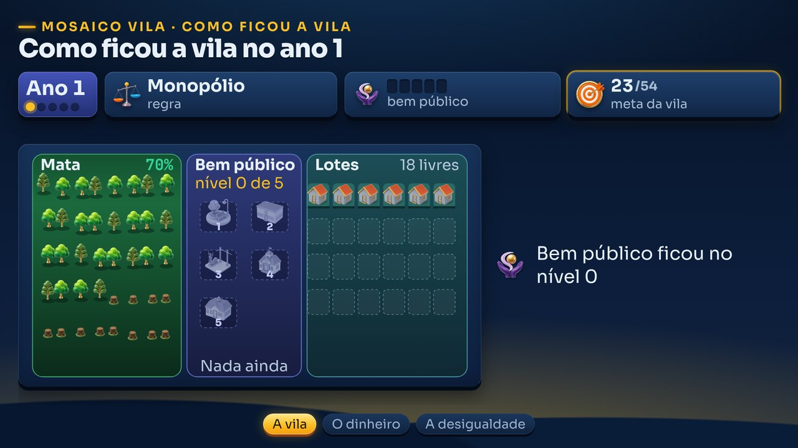
A pergunta do jogo
E se a sua família pudesse ganhar mais, mas a vila perdesse com isso? O que você faria, sabendo que ninguém vai ver a sua resposta? Em cinco anos de jogo, cada pessoa descobre o que faz. A turma inteira descobre o que fez junta.
Para quem12 a 40 pessoas, em 4 a 8 famílias
DuraçãoCerca de 47 a 49 minutos
Do que precisaUma TV ou telão e um celular por pessoa
SituaçãoProtótipo em testes; sala com celulares ainda não aberta
Versão 1.0 · 17 de novembro de 2026 Corresponde ao protótipo publicado nesta data. Telas e regras ainda podem mudar.
Prof. Mário César Nascimento, PhD Autor e desenvolvedor do Mosaico Vila
Sumário
1O que é o Mosaico Vilaa proposta, em seis passos
2Antes de jogarsala, tempo e número de pessoas
3As três telastelão, celular e painel de quem conduz
4A vila e as famíliaspontos, renda e patrimônio
5Os cinco anosuma novidade por ano
6As duas regras e a votaçãoMonopólio ou Prosperidade
7As cartas da partidapropostas, honestidade e confiança
8Conduzir a partidapasso a passo no painel
9O fechamentoa meta, cinco perguntas e o placar pessoal
10Anonimato e cuidadoo que o telão nunca mostra
11Os números do jogotabela de consulta
12Experimentar no simuladora aula inteira no computador
13Dúvidas comunso que os participantes mais perguntam
Como este manual fala
Você é quem conduz a partida. Participantes são as pessoas que jogam pelo celular. Família é o grupo em que cada participante cai por sorteio, e a vila é a turma inteira. O telão é a TV ou o projetor que todos veem.
Resumo para os participantes
Quem entra na sala recebe no celular uma versão curta das regras, com o botão "Entendi", que depois fica no botão i. Este manual é a versão completa, para quem conduz ou quer entender a proposta a fundo.
1. O que é o Mosaico Vila
O Mosaico Vila é um jogo de turma sobre escolhas que parecem pequenas e somam grande. Todos os participantes formam uma vila e cada grupo é uma família, sorteada. Durante cinco anos de jogo, cada família recebe renda e decide o que fazer com ela: guardar, pôr no bem público, tirar madeira da mata, replantar, comprar lotes.
O telão mostra a vila inteira: a mata, o bem público, os lotes e a meta. O celular mostra só o que é da pessoa e da família dela. A cada ano entra uma regra nova, sempre com um exemplo resolvido no telão e uma pergunta rápida no celular. No caminho, o jogo faz algumas propostas que testam a honestidade de cada um, e no fim a turma conversa sobre o que aconteceu.
A partida em seis passos
Entrada. Os participantes entram pelo celular com o código do telão e leem o resumo das regras.
Famílias. Você forma as famílias; cada pessoa descobre a sua e se senta com ela.
Anos 1 a 3. Renda e bem público, depois a mata, depois moradia e aluguel. Seção 5
Votação. No fim do ano 3, a turma escolhe a regra dos anos 4 e 5. Seção 6
Anos 4 e 5. Abre o mercado de lotes e chega a proposta grande. Seções 5 e 7
Fechamento. A vila bateu a meta? Cinco perguntas para conversar. Seção 9
Ideia-chave
Ninguém ganha sozinho. A vila inteira ganha ou perde junta, conforme a meta da regra em vigor, e nenhuma escolha individual aparece no telão. Isso deixa cada pessoa livre para decidir como decidiria de verdade, e dá à turma números próprios para discutir bem comum, desigualdade, corrupção e confiança.
Onde o jogo está hoje
O Mosaico Vila é um protótipo em testes. A aula inteira já roda no simulador, no computador, com telão, celulares simulados e painel de quem conduz (seção 12). A sala com os celulares reais dos participantes ainda não está aberta. Este manual descreve a partida como ela acontece no simulador e como vai acontecer na sala.
2. Antes de jogar
Item
O que considerar
Pessoas
De 12 a 40 participantes. O jogo forma de 4 a 8 famílias, uma a cada 4 pessoas, com 3 a 5 pessoas em cada.
Grupos pequenos
De 2 a 11 pessoas há um modo em teste: a vila se completa com vizinhos automáticos até ter pelo menos 4 famílias e 12 pessoas.
Tempo
Cerca de 47 a 49 minutos, da entrada ao fechamento. O painel mostra o tempo de aula e avisa se a partida atrasar.
Telão
Uma TV ou projetor que todos enxerguem. As letras foram dimensionadas para TV; o telão tem botão de tela cheia.
Celulares
Um por pessoa, com navegador. Não há aplicativo para instalar nem cadastro.
Sala
As famílias sentam juntas para conversar. Em três momentos (proposta pequena, votação e proposta grande) cada pessoa responde no próprio lugar, sem mostrar a tela.
Avise antes de começar
O jogo fala de dinheiro, aluguel, herança e propostas de corrupção, sempre com famílias e personagens inventados. Se algum tema pesar, a pessoa pode só observar ou falar com você. Esse aviso aparece também no telão, na tela de entrada.
Cenário profissional (opcional, só na fala)
Se quiser aproximar o jogo da área da turma, você pode contar a vila como o Complexo Esportivo do Bairro: as famílias são equipes, o bem público é o programa gratuito de atividade física e a mata é o parque onde todos treinam. As telas continuam com os nomes da vila; o cenário entra só na sua fala, e o roteiro fica no painel de quem conduz.
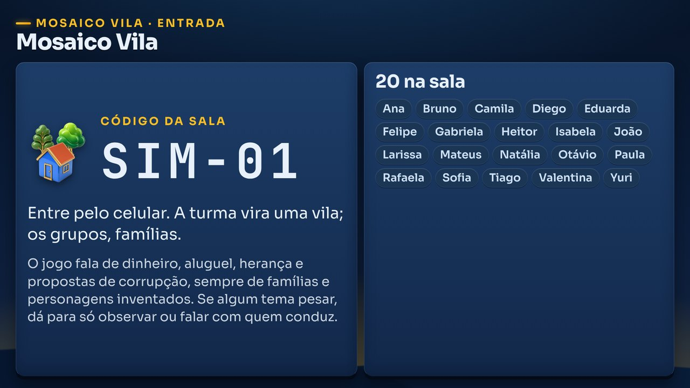
Figura 1. Telão na entrada: o código da sala, quem já entrou e o aviso sobre os temas do jogo.
3. As três telas
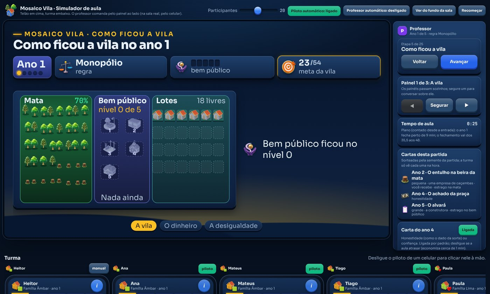
Figura 2. As três telas juntas no simulador: o telão (em cima), os celulares da turma (embaixo) e o painel de quem conduz (à direita).
TelãoA vila inteira: o que mudou no ano, exemplos resolvidos e resultados da turma. Nunca mostra a escolha de uma pessoa.
CelularO que é da pessoa e da família: extrato, decisões, perguntas e as propostas. No topo, um painel fixo com os números.
Painel de quem conduzAvançar e voltar etapas, segurar um resultado na tela, ver o tempo de aula e as cartas sorteadas.
A faixa de ícones
O telão e o celular têm a mesma faixa no topo. Quando um número muda no ano, ele pisca e mostra quanto subiu ou desceu.
Ícone
O que mostra
Ano
Em que ano a vila está, de 1 a 5.
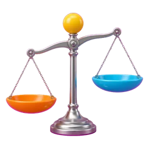
Regra
Monopólio ou Prosperidade. A vila começa no Monopólio.
Mata
Quanto da mata está de pé, em porcentagem. Aparece a partir do ano 2.
Bem público
O nível atual, de 0 a 5, em cinco quadradinhos.
Meta da vila
Quanto a vila tem e quanto precisa ter, conforme a regra em vigor.
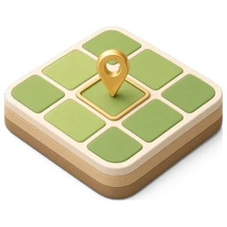
Lotes livres
Quantos lotes ainda não têm dono. Aparece a partir do ano 3.
Pontos (só no celular)
O saldo da família. É a moeda do jogo: tudo se ganha e se paga em pontos.
4. A vila e as famílias
As famílias são sorteadas pelo jogo. Cada uma tem cor, forma e casa próprias, para ser reconhecida também por quem não distingue cores:
VerdeAzulÂmbarRubiVioletaCianoCoralLima
Pontos, renda e patrimônio
Pontos são o saldo da família, o caixa dela.
Renda é o que a família recebe no começo de cada ano: 8 pontos por pessoa, mais 2 por pessoa para cada nível do bem público. A mata pode somar ou tirar (seção 5).
Patrimônio é o saldo mais o valor dos lotes. Cada lote vale 10 pontos, mais 2 por nível do bem público. É o patrimônio que conta nas metas.
Quem decide pela família
Cada pessoa envia a sua proposta pelo celular. Vale a mediana da família, o valor do meio: ninguém decide sozinho e uma proposta extrema não arrasta as outras. Antes de enviar, a família tem 45 segundos de conversa, com relógio no telão.
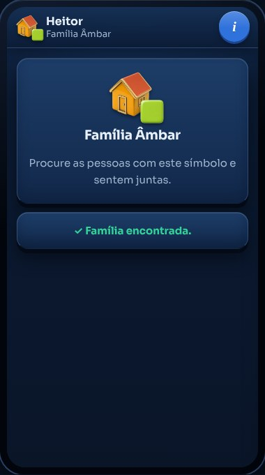
Figura 3. Cada pessoa vê no celular a família em que caiu.
As famílias não começam iguais
É de propósito. Uma família começa com mais pontos e três lotes, como uma herança, e outra começa sem lote nenhum. Quem ficou onde foi sorteio, não mérito, e o telão diz isso. Cada família vê a própria situação só no celular. Esse ponto de partida desigual é o que dá matéria para a conversa sobre aluguel e desigualdade no fechamento.
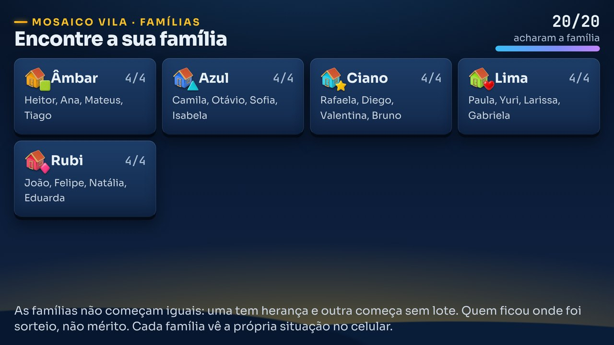
Figura 4. Telão depois do sorteio: as famílias e quem está em cada uma.
5. Os cinco anos
Cada ano tem o mesmo ritmo: o telão apresenta a novidade com um exemplo resolvido, o celular faz uma pergunta para conferir (não vale ponto; quem erra vê a explicação), a família conversa e decide, e o telão mostra como ficou a vila.
Ano 1
A vila começa: renda e bem público
Cada família decide quanto da renda do ano vai para o bem público, até metade dela. O resto fica no saldo. Quando a soma das contribuições enche um nível, o bem público sobe, e cada nível novo aumenta a renda de todas as famílias em 2 pontos por pessoa, por ano, inclusive das que não puseram nada.
NÍVEL 1Praça
NÍVEL 2Posto de saúde
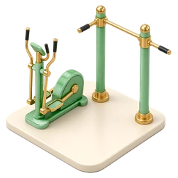
NÍVEL 3Academia ao ar livre
NÍVEL 4Escola de esportes
NÍVEL 5Centro comunitário
Para subir um nível, a vila precisa juntar 12 pontos por família. Com 5 famílias, são 60 pontos por nível.
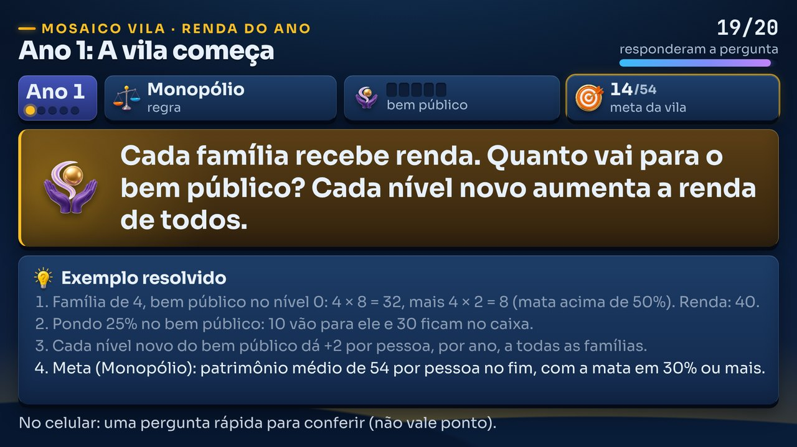
Figura 5. Abertura do ano 1: a novidade em destaque e o exemplo resolvido, linha a linha.
Ano 2
A mata entra no jogo
A mata é de todos e começa em 70%. Ela se regenera um pouco a cada ano. Cada família pode tirar até 3 cargas de madeira por ano: cada carga rende 6 pontos à família e tira um pedaço da mata. Também pode replantar, com até 30% da renda: cada 5 pontos replantados devolvem à mata o equivalente a uma carga.
Mata em 50% ou mais: cada pessoa da vila ganha 2 pontos a mais de renda por ano.
Mata abaixo de 30%: ela colapsa, e cada pessoa perde 4 pontos de renda por ano, até ela voltar. Replantando, a mata se recupera e a perda acaba.
Depois das decisões do ano 2 chega a proposta pequena, a primeira carta da partida (seção 7).
Ano 3
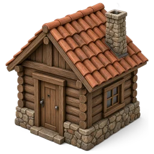
Moradia e aluguel
A partir daqui, cada família precisa de 1 lote a cada 3 pessoas (uma família de 5 precisa de 2). Quem não tem lote suficiente paga aluguel por lote que falta, todo ano. Esse dinheiro vai para as famílias com lote sobrando, na proporção do que sobra a cada uma. Ninguém fica abaixo de 6 pontos de renda por pessoa: é o piso.
No fim do ano, o telão mostra quantos pontos de aluguel mudaram de mãos e como ficou a desigualdade da renda. Em seguida vem a votação da regra (seção 6).
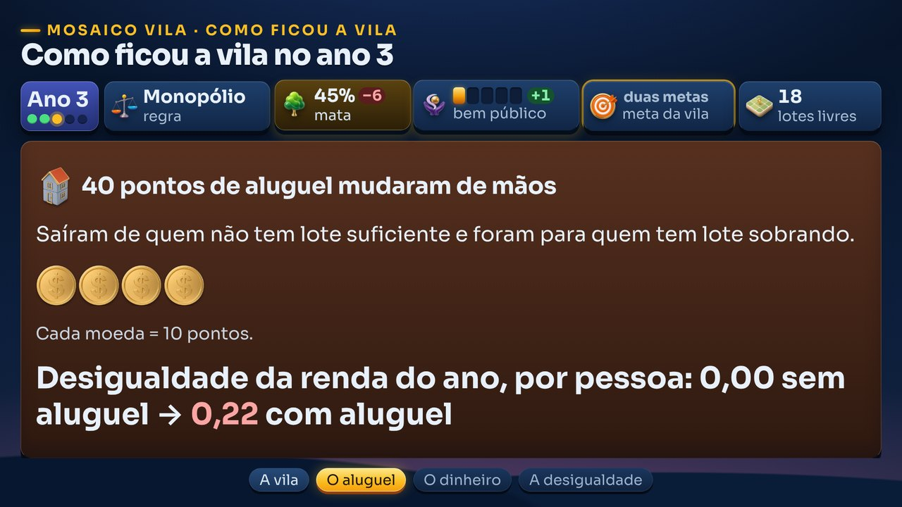
Figura 6. "Como ficou a vila" no ano 3: o aluguel em moedas e a desigualdade da renda antes e depois dele.
Ano 4
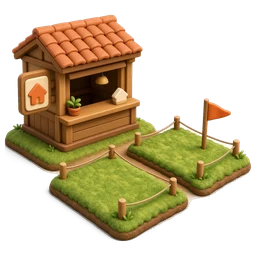
Abre o mercado de lotes
A cada ano, até 3 lotes livres vão a lance fechado. O lance mínimo é 14 no ano 4 e 16 no ano 5. Cada pessoa propõe quanto do saldo a família põe além do mínimo, e vale a mediana (quem não envia conta como zero). O maior lance leva o lote e paga ao banco da vila; esse dinheiro sai do jogo.
Cada família compra até ter a moradia de que precisa mais 1 lote.
A família pode marcar "não queremos lote" e ficar de fora.
Na Prosperidade, o que passa do mínimo conta pela metade.
Depois das decisões do ano 4 pode entrar a carta de honestidade ou de confiança (seção 7).
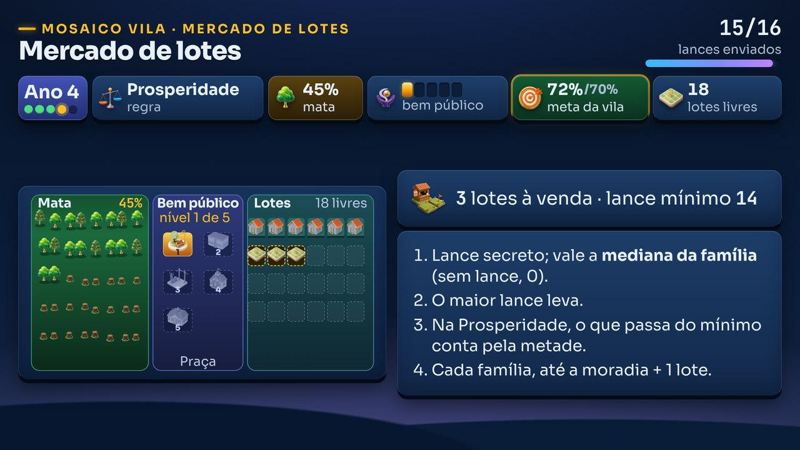
Figura 7. Mercado de lotes: quantos lotes estão à venda, o lance mínimo e as regras do lance.
Ano 5
O último ano
Logo na abertura chega a proposta grande (seção 7), antes das decisões, para a turma ainda poder reagir: replantar, contribuir. Depois vêm o último mercado de lotes e as últimas decisões. As contas fecham e a vila descobre se bateu a meta.
6. As duas regras e a votação
A vila começa no Monopólio. No fim do ano 3, depois de sentir o aluguel, a turma vota se mantém essa regra ou troca para a Prosperidade. A regra escolhida vale para os anos 4 e 5.
Monopólio
Prosperidade
Aluguel
8 pontos por lote que falta, por ano
2 pontos por lote que falta, por ano
Imposto
Não há
1,5 ponto por lote e 1 ponto por pessoa, por ano, para o bem público
Lance no mercado
Conta o lance inteiro
O que passa do mínimo conta pela metade
Meta da vila
Patrimônio médio de 54 pontos por pessoa
A família mais pobre com pelo menos 70% do patrimônio médio, por pessoa
Nas duas
A mata precisa terminar em 30% ou mais
O que a meta mede
Eficiência: quanto a vila juntou
Equidade: se ninguém ficou muito para trás
Como é a votação
O telão mostra um exemplo resolvido das duas regras e o celular faz uma pergunta para conferir.
A turma conversa por 90 segundos, com uma pergunta-guia no telão.
Cada pessoa vota no próprio lugar, longe da família, sem mostrar a tela.
Vence a maioria de quem votou. Empate mantém o Monopólio.
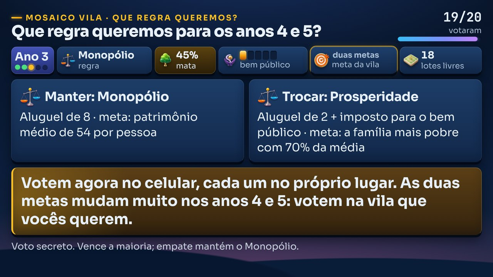
Figura 8. A votação no telão: as duas regras lado a lado e a lembrança de que as metas mudam.
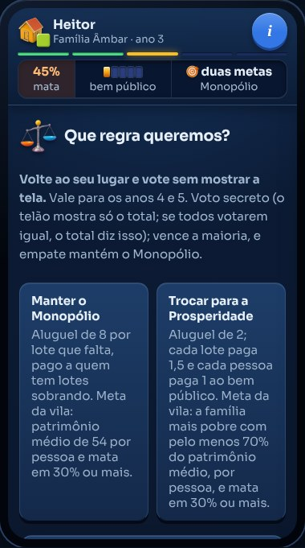
Figura 9. O voto no celular.
A vila na outra regra
No fechamento, o jogo refaz os anos 4 e 5 na regra que a turma não escolheu, com as mesmas decisões, e mostra como a desigualdade teria ficado e se a meta seria batida. O telão avisa que é um "e se", não uma previsão.
7. As cartas da partida
Em três momentos, o jogo faz uma proposta a cada pessoa. As cartas são sorteadas a cada partida, então a turma nunca sabe qual virá: muda quem propõe, de que lado a pessoa está e o tamanho do estrago. A proposta vem sempre do jogo, nunca de um colega, e os personagens são inventados.
Quando
Carta
Como funciona
Pontos pessoais
Ano 2 depois das decisões
Proposta pequena
Cada um decide por si. Cada "aceito" faz uma pequena parte de um estrago grande, na mata ou no bem público. Se a turma inteira aceitar, o estrago é o de uma proposta grande.
+2 para quem aceita
Ano 4 opcional
Honestidade ou confiança
Honestidade: um erro a favor da pessoa, que ninguém vai conferir; ela fica ou devolve. Confiança: a pessoa decide confiar antes de saber se a outra parte é honesta.
Honestidade: +3 para quem fica. Confiança: arrisca 2 e, se a outra parte for honesta, ganha 2
Ano 5 na abertura
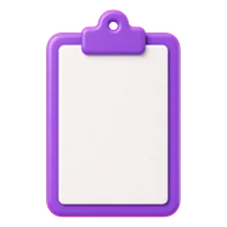
Proposta grande
Todos respondem, mas vale a resposta de uma pessoa sorteada, que nunca é revelada. Se ela aceitar, o bem público perde um nível ou a mata perde 20 pontos (de 100 da mata cheia).
+8 para a pessoa sorteada, se aceitar
Pontos pessoais
Os pontos das cartas são da pessoa, não da família. Eles nunca entram no saldo, no patrimônio, nas metas ou no telão. Aparecem só no placar pessoal, no celular de cada um, no fechamento. Assim nenhum número da família entrega o que alguém respondeu.
As duas falas e o carimbo
Na proposta pequena, metade da turma lê a proposta como um "presente em troca de" alguma coisa, e a outra metade lê às claras, com as palavras "cobra" e "oferece". Os pontos e o estrago são os mesmos. Na revelação, o telão compara as duas falas e dá o nome: CORRUPÇÃO. A pergunta que fica para a turma é se a palavra muda a decisão.
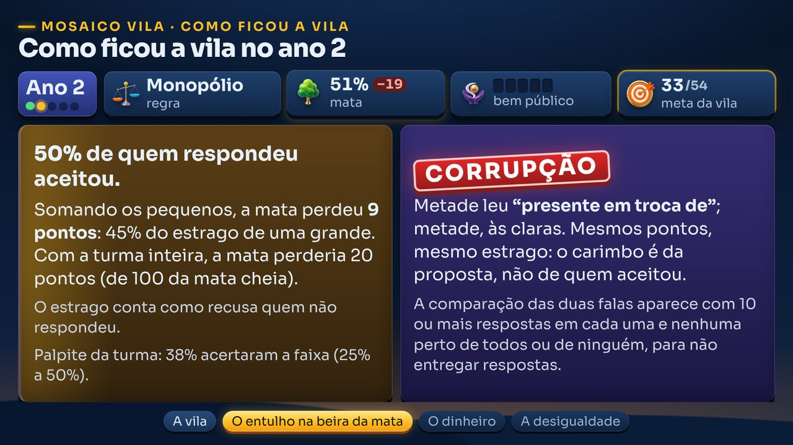
Figura 10. Revelação da proposta pequena: quantos aceitaram, quanto a mata perdeu e a comparação das duas falas.Figura 11. A proposta no celular.
As cartas que podem sair
Grupo
Cartas
Pequenas (ano 2)
O fiscal da mata · A carga do vizinho · A madeira sem nota (carimbo "sonegação") · A taxa da praça · O entulho na beira da mata
Honestidade (ano 4)
O dado da sorte · O extrato a mais · O achado da praça
Confiança (ano 4)
O pedido na estrada · A venda fiado · O sinal adiantado · A carroça dividida. Cada pessoa recebe uma das quatro, e em todas a chance de má-fé é a mesma, 1 em 4.
Grandes (ano 5)
O alvará · A licença da madeireira · O contrato da escola · O aterro sem licença
Por que a confiança tem a mesma chance em todas
Para nenhum tipo de pessoa parecer mais perigoso que outro. Depois de responder, o celular pergunta em qual situação a turma acha que houve mais golpe, e o telão mostra, com os números da própria turma, que a chance era igual em todas.
8. Conduzir a partida
Você conduz pelo painel. Ele mostra a etapa atual, quantos já responderam e os botões do momento.
No painel
O que faz
Formar as famílias
Sorteia as famílias e as cartas da partida. Use quando todos tiverem entrado.
Avançar e Voltar
Passa para a próxima etapa ou retorna à anterior. Quando todos enviaram, o botão avisa: "Todos enviaram: avançar".
Segurar e Soltar
Em "Como ficou a vila", os painéis passam sozinhos. Segure um deles na tela para conversar e solte quando a turma tiver visto. As setas ◀ e ▶ escolhem o painel.
Tempo de aula
Conta desde a entrada e compara com o plano. Se a partida atrasar, o cartão fica destacado e sugere o que encurtar.
Cartas desta partida
Mostra as cartas sorteadas para os anos 2, 4 e 5. Só você vê; a turma conhece cada carta na hora.
Carta do ano 4
Ligada por padrão. Desligue se a aula atrasar: economiza cerca de 1 minuto.
Conversas curtas
Reduz a conversa antes do voto para 60 segundos e a conversa da família para 30 segundos nos anos 4 e 5. Economiza cerca de 1 minuto.
◀ Anterior e Próxima ▶
No fechamento, trocam a pergunta que está no telão.
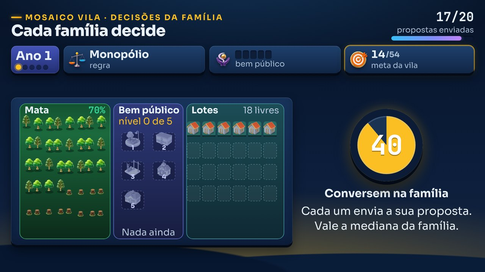
Figura 12. Decisões da família: o relógio da conversa e, no canto, quantas propostas chegaram.Figura 13. A conversa da família no celular.
Um ano, passo a passo
Abertura. Leia com a turma a novidade e o exemplo resolvido no telão. Os participantes respondem à pergunta de conferência no celular.
Mercado (anos 4 e 5). Cada pessoa envia o lance da família.
Decisões. A família conversa por 45 segundos e cada pessoa envia a sua proposta. O telão mostra quantas propostas já chegaram.
Carta (anos 2 e 4; no ano 5 ela vem logo depois da abertura). Peça silêncio e que ninguém mostre a tela.
Como ficou a vila. O telão revela, em sequência, a vila, a carta, o dinheiro e a desigualdade. Segure o painel que render conversa.
Quem não responde
O jogo não trava por causa de uma pessoa. Nas decisões da família, quem não envia mantém a proposta anterior. Na votação, vale a maioria de quem votou. Nas cartas, quem não responde não ganha nem arrisca nada, e se a pessoa sorteada na proposta grande não responder, vale "não".
9. O fechamento
Depois do ano 5, o telão diz se a vila bateu a meta da regra em vigor e abre cinco perguntas, uma por vez. Para cada uma, o formato sugerido no telão é 1 minuto em dupla e, depois, a turma. As perguntas usam os números da própria partida, por isso mudam de turma para turma.
Pergunta
Sobre o que conversa
De onde vem a ideia
Aluguel
Quando o aluguel entrou, o que aconteceu com a desigualdade? Quem ganhou com isso, e sem fazer o quê?
Henry George: o valor da terra vem da comunidade.
Voto
Por que a turma manteve ou trocou a regra, e como a vila teria ficado na outra.
Lizzie Magie (1904): o Jogo do Proprietário já tinha estas duas regras.
Mata
O que as cargas tiraram, o que a natureza e o replantio devolveram, e o que segurou ou não a mata.
Elinor Ostrom: comunidades cuidam do comum quando fazem regras e conversam.
Honestidade
Na pequena, cada um decidiu por si; na grande, uma pessoa tinha o poder. O tamanho da proposta mudou a resposta? E a palavra?
Abbink e colegas (2002 e 2006): propina e a palavra. Conforme a carta do ano 4, também Jiang (2013), Cohn e colegas (2019) ou Berg e colegas (1995).
Profissão
Onde isso aparece fora do jogo: a agenda do posto, a praça onde se treina, a verba do clube. Quem ganha sem fazer nada, e quem cuida?
Elinor Ostrom: o comum também está em postos, praças e clubes.
O placar pessoal e a pergunta final
No celular, cada pessoa vê o seu placar: a parte dela no patrimônio da família mais os pontos pessoais das cartas. Só ela vê. Em seguida, o celular faz duas perguntas rápidas: o que mais te guiou hoje (impulso, emoção ou razão) e o que mais pesou (ganho, carreira, relações, o que é certo ou como me vejo). O telão mostra só o total da turma.
Dica de condução
Você não precisa passar pelas cinco perguntas. Se o tempo estiver curto, escolha duas: a do aluguel costuma render mais quando a desigualdade subiu, e a da honestidade quando as duas propostas tiveram respostas diferentes.
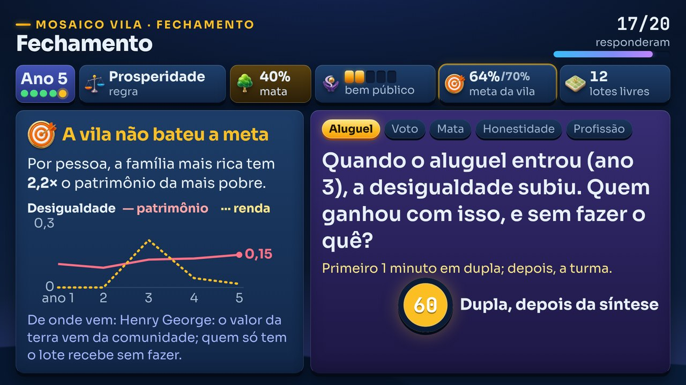
Figura 14. Fechamento: à esquerda, o resultado da meta e a linha do tempo da desigualdade; à direita, a pergunta da vez.
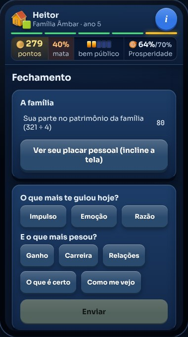
Figura 15. O fechamento no celular.
10. Anonimato e cuidado
O jogo trata de temas sensíveis e foi desenhado para que ninguém seja exposto.
Nenhuma escolha individual aparece no telão. Só totais da turma, e só com 5 respostas ou mais. Com menos de 5, o total não aparece e a proposta pequena não vale.
O telão não mostra o saldo de nenhuma família. Os lotes aparecem numa cor neutra e o patrimônio em moedas, sem nome. Cada família vê o próprio extrato só no celular.
A pessoa sorteada na proposta grande nunca é revelada. Como os pontos são pessoais, nenhum número de família entrega a resposta de ninguém.
Não há engano. O celular diz que o personagem da carta é do jogo e que os pontos valem no placar. O dado da sorte é rolado pelo sistema.
Os personagens são fictícios (fiscal, vizinho, serraria, construtora, madeireira) e não representam ninguém da sala.
Quem preferir só observar pode. O aviso está na tela de entrada.
Na sua fala
Evite perguntar quem aceitou ou quem votou em quê. A conversa funciona melhor em cima dos totais da turma, que o telão já mostra. Se alguém quiser contar a própria escolha, é decisão da pessoa.
11. Os números do jogo
Regra
Valor
Renda por pessoa, por ano
8 pontos, mais 2 por nível do bem público
Piso de renda
6 pontos por pessoa, depois de aluguel e imposto
Contribuição ao bem público
Até 50% da renda do ano
Nível do bem público
12 pontos por família para subir; 5 níveis
Mata
Começa em 70%; bônus de +2 por pessoa com 50% ou mais; colapso abaixo de 30%, com −4 por pessoa
Carga de madeira
Até 3 por família, por ano; cada uma rende 6 pontos
Replantio
Até 30% da renda; cada 5 pontos devolvem o equivalente a uma carga
Moradia (a partir do ano 3)
1 lote a cada 3 pessoas
Aluguel por lote que falta
8 no Monopólio; 2 na Prosperidade
Imposto na Prosperidade
1,5 por lote e 1 por pessoa, para o bem público
Mercado (anos 4 e 5)
Até 3 lotes por ano; lance mínimo de 14 no ano 4 e 16 no ano 5; cada família compra até a moradia mais 1 lote
Valor do lote no patrimônio
10 pontos, mais 2 por nível do bem público
Meta do Monopólio
Patrimônio médio de 54 por pessoa e mata em 30% ou mais
Meta da Prosperidade
Família mais pobre com 70% da média, por pessoa, e mata em 30% ou mais
Pontos pessoais das cartas
Pequena +2; honestidade +3; confiança ±2; grande +8
12. Experimentar no simulador
O simulador roda a aula inteira no computador, sem celulares: o telão em cima, a turma embaixo e o painel de quem conduz ao lado. Serve para conhecer o jogo, ensaiar a condução e mostrar a proposta a outras pessoas.
Abra a página do Mosaico Vila e clique em Simular aula no PC.
Em Participantes, escolha o tamanho da turma simulada.
Clique em Formar as famílias e conduza com Avançar, como na sala.
Use os botões do topo conforme a tabela abaixo.
Botão
O que faz
Piloto automático
Os celulares simulados respondem sozinhos. Desligue o piloto de um celular para clicar nele à mão e ver o jogo como participante.
Professor automático
O simulador avança as etapas sozinho, esperando as animações do telão. Bom para assistir a uma partida inteira.
Ver do fundo da sala
Mostra o telão no tamanho aparente de uma TV vista do fundo da sala, para conferir se as letras se leem.
Recomeçar
Volta à entrada e sorteia uma partida nova, com outras cartas.
O que o simulador não mostra
Os participantes simulados decidem por sorteio, dentro de um modelo. Eles não reproduzem a emoção da turma, a qualidade da conversa nem o cansaço de uma aula real. O jogo ainda não foi testado com uma turma de verdade nem em aparelhos físicos.
13. Dúvidas comuns
Pergunta
Resposta
"Os pontos são dinheiro?"
São a moeda do jogo. Tudo se ganha e se paga em pontos.
"Minha família ganha se tiver mais pontos?"
Não há família vencedora. A vila inteira ganha ou perde, conforme a meta.
"Por que a outra família começou com mais?"
Foi sorteio. A herança desigual faz parte do jogo e é assunto do fechamento.
"Eu pus 40% e a família pôs 20%. Por quê?"
Vale a mediana da família, o valor do meio entre as propostas enviadas.
"Alguém vai saber o que eu respondi na proposta?"
Não. O telão mostra só totais, e só com 5 respostas ou mais.
"A mata colapsou. Acabou?"
Não. Replantando, ela volta acima de 30% e a perda de renda termina.
"Dá para trocar a regra de novo no ano 5?"
Não. A votação acontece uma vez, no fim do ano 3, e vale para os anos 4 e 5.
"Onde vejo as regras de novo?"
No botão i, no alto do celular, a qualquer momento.
 Mosaico Vila
Mosaico Vila
 Mata
Mata Meta da vila
Meta da vila Azul
Azul Âmbar
Âmbar Rubi
Rubi Monopólio
Monopólio